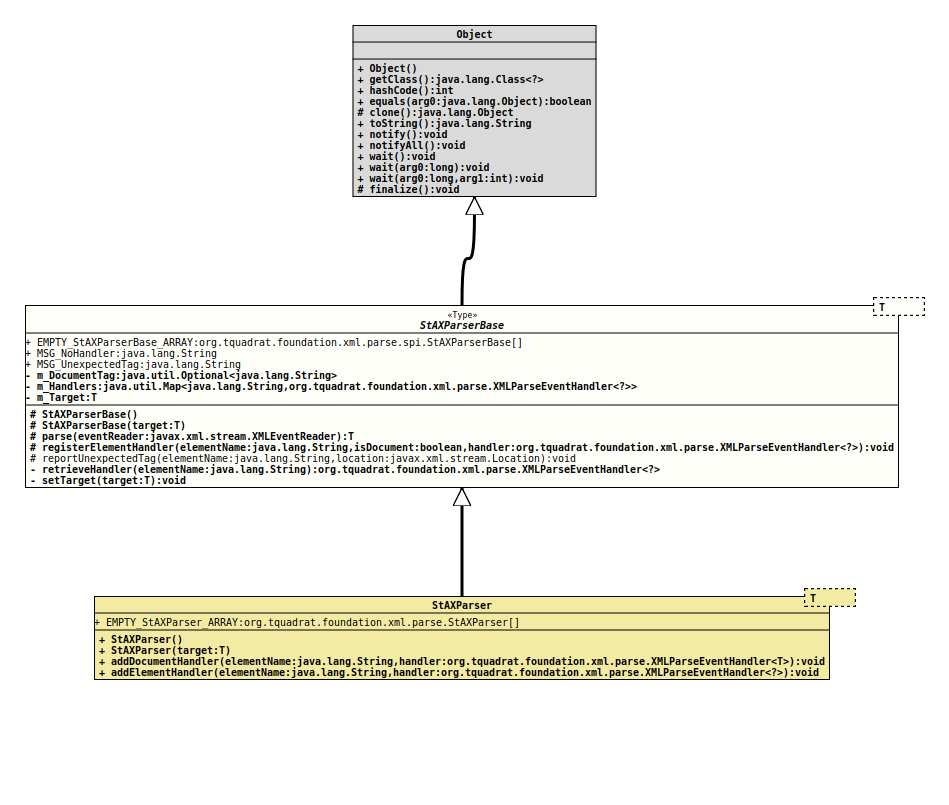

Module org.tquadrat.foundation.xml
Class StAXParserBase<T>
java.lang.Object
org.tquadrat.foundation.xml.parse.spi.StAXParserBase<T>
- Type Parameters:
T- The type of the target data structure.
- Direct Known Subclasses:
StAXParser
@ClassVersion(sourceVersion="$Id: StAXParserBase.java 1071 2023-09-30 01:49:32Z tquadrat $")
@API(status=EXPERIMENTAL,
since="0.0.5")
public abstract class StAXParserBase<T>
extends Object
The abstract base class for StAX based XML parsers.
An implementation of this class will parse an XML stream to an object
of type T that is either provided with the constructor
StAXParserBase(Object)
or will be created by an instance of
XMLParseEventHandler.
The parse event handler can be provided either programmatically, as
shown in
StAXParser,
or as methods in an implementation of this class.
- Author:
- Thomas Thrien (thomas.thrien@tquadrat.org)
- Version:
- $Id: StAXParserBase.java 1071 2023-09-30 01:49:32Z tquadrat $
- Since:
- 0.0.5
- UML Diagram
-

UML Diagram for "org.tquadrat.foundation.xml.parse.spi.StAXParserBase"
{kind=link}
-
Field Summary
FieldsModifier and TypeFieldDescriptionstatic final StAXParserBase[]An empty array ofStAXParserBaseobjects.The document element tag.private final Map<String, XMLParseEventHandler<?>> The event handlers.private TThe target data structure.static final StringThe message for missing handlers: "No handler was registered for element \'%s\'".static final StringThe message for an unexpected tag: "The element tag \'%s\' is unexpected here". -
Constructor Summary
ConstructorsModifierConstructorDescriptionprotectedCreates a newStAXParserBaseinstance.protectedStAXParserBase(T target) Creates a newStAXParserinstance. -
Method Summary
Modifier and TypeMethodDescriptionprotected Tparse(XMLEventReader eventReader) Processes the given event reader.protected final voidregisterElementHandler(String elementName, boolean isDocument, XMLParseEventHandler<?> handler) Registers an element handler.protected static final voidreportUnexpectedTag(String elementName, Location location) Throws anXMLStreamExceptionthat indicates an unexpected tag at the given location.private final XMLParseEventHandler<?> retrieveHandler(String elementName) Retrieves the XML parse event handler for the given element name.private final voidSets the target data structure.
-
Field Details
-
EMPTY_StAXParserBase_ARRAY
An empty array ofStAXParserBaseobjects. -
MSG_NoHandler
The message for missing handlers: "No handler was registered for element \'%s\'".- See Also:
-
MSG_UnexpectedTag
The message for an unexpected tag: "The element tag \'%s\' is unexpected here".- See Also:
-
m_DocumentTag
The document element tag. -
m_Handlers
The event handlers. -
m_Target
The target data structure.
-
-
Constructor Details
-
StAXParserBase
protected StAXParserBase()Creates a newStAXParserBaseinstance. -
StAXParserBase
Creates a newStAXParserinstance.- Parameters:
target- The target data structure.
-
-
Method Details
-
parse
@API(status=EXPERIMENTAL, since="0.0.7") protected T parse(XMLEventReader eventReader) throws SAXException Processes the given event reader.- Parameters:
eventReader- The XML stream.- Returns:
- The target data structure.
- Throws:
SAXException- Something went wrong.
-
registerElementHandler
protected final void registerElementHandler(String elementName, boolean isDocument, XMLParseEventHandler<?> handler) Registers an element handler.- Parameters:
elementName- The element name.isDocument-trueif the element name is the document name.handler- The parse event handler.
-
reportUnexpectedTag
@API(status=EXPERIMENTAL, since="0.0.7") protected static final void reportUnexpectedTag(String elementName, Location location) throws XMLStreamException Throws anXMLStreamExceptionthat indicates an unexpected tag at the given location.- Parameters:
elementName- The encountered tag.location- The location.- Throws:
XMLStreamException- Always.
-
retrieveHandler
Retrieves the XML parse event handler for the given element name.- Parameters:
elementName- The name of the element to handle.- Returns:
- The requested instance of
XMLParseEventHandler. - Throws:
XMLStreamException- There is no registered handler for the given element name.
-
setTarget
Sets the target data structure.- Parameters:
target- The target data structure.
-